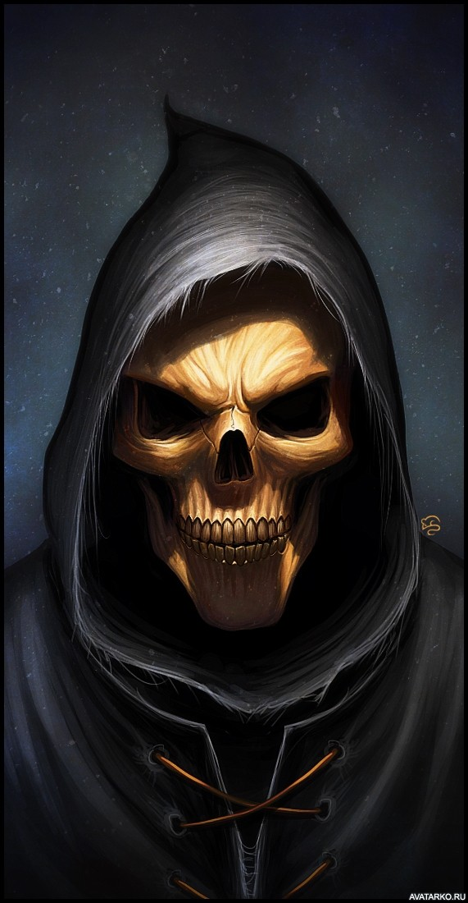

Текст
перейти 2 страницаРодился в Гунценхаузене, в 1601 изучал астрономию у Т. Браге в Праге, затем медицину в Падуе. Служил астрономом и математиком при дворе маркграфа в Ансбахе.
Одним из первых начал изучать небо с помощью телескопа. Претендовал на открытие четырёх спутников Юпитера, ныне известных как Галилеевы, за несколько дней до Галилео Галилея. Для этих четырёх известных в то время спутников Юпитера составил первые таблицы среднего движения; первым обратил внимание на изменения их яркости; дал им названия, сохранившиеся до настоящего времени: Ио, Европа, Ганимед, Каллисто. Марию также принадлежит первое упоминание о туманности в созвездии Андромеды (спиральная галактика M31)